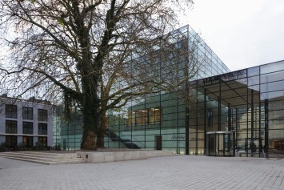
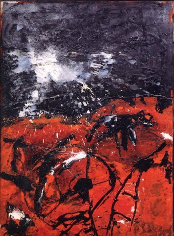

Willkommen im Pressereich
Sie finden hier Pressetexte und Bildmaterial zu aktuellen und kommenden Ausstellungen sowie Veranstaltungen des Emil Schumacher Museums:
Ausstellungen
Veranstaltungen
Der Pressebereich dient als Service für die Berichterstattung über das Emil Schumacher Museum sowie dessen Ausstellungen und Veranstaltungen. Die Fotos können frei verwendet werden; Bildrechte der Künstlerinnen und Künstler sind davon unberührt.
Wir freuen uns auf die Zusammenarbeit! Bitte kontaktieren Sie uns für Rückfragen oder individuelle Informationen, die wir Ihnen gern zusammenstellen.
KONTAKT
Rouven Lotz
Direktor
T.: +49 2331 3060 066
F.: +49 2331 3060 240

Download: Emil Schumacher Museum Hagen mit Übergang zum Osthaus Museum Hagen. Foto: Werner Hannappel, Essen
Download: Emil Schumacher Museum Hagen mit Übergang zum Osthaus Museum Hagen. Foto: Werner Hannappel, Essen
{kind=link}
{kind=link}
{kind=link}

Download: Emil Schumacher, Subito, 1998, Öl auf Leinwand, 169,5 x 120 cm. © VG Bild-Kunst Bonn, 2023
{kind=link}
Download: Emil Schumacher, Subito, 1998, Öl auf Leinwand, 169,5 x 120 cm. © VG Bild-Kunst Bonn, 2023
{kind=link}